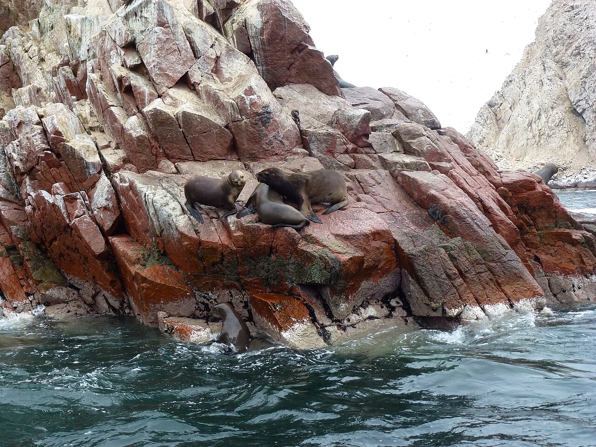

Paracas
Ica, Pérou · kitesurf, windsurf, kayak

Baie désertique au vent régulier, près de la réserve nationale et des îles Ballestas. Un spot de kite en plein désert.
- Lieu
- Ica, Pérou
- Niveau
- Intermédiaire
- Activités
- kitesurf, windsurf, kayak
- Type d'eau
- Mer / océan
- Coordonnées
- -13.85, -76.25 (position approximative du secteur)
Dangers à connaître
- Vent fort l’après-midi.
- Réserve protégée.
Le conseil d'Ocean Buddy
Le vent se lève vers midi : profite du matin pour visiter les îles Ballestas.
Ouvrir dans Ocean Buddy Télécharger sur l'App Store
Source : Fiche Ocean Buddy · septembre 2026 · à vérifier localement.